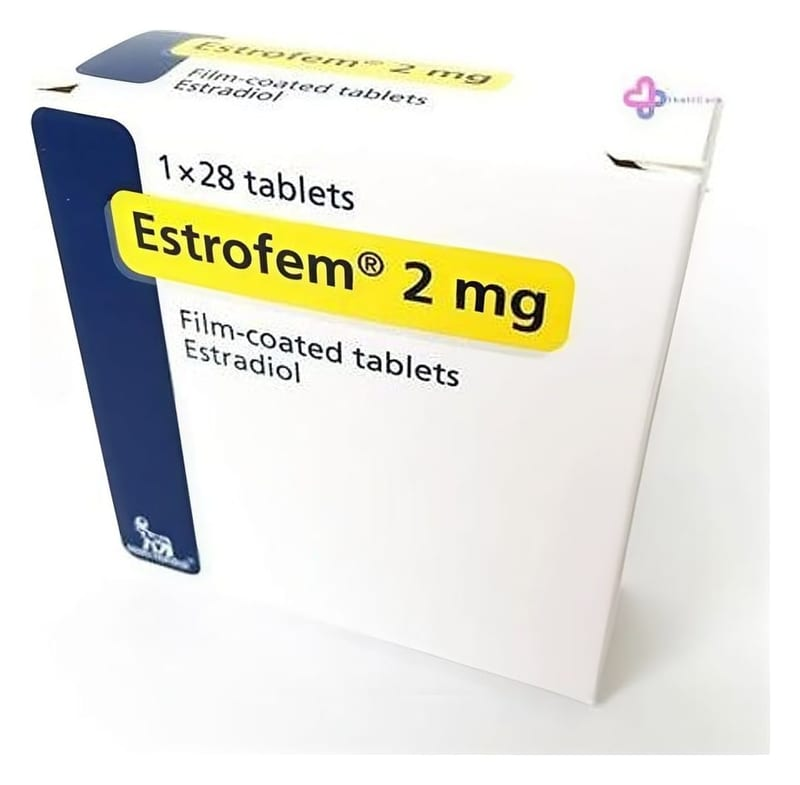

Estrofem 2 mg Film Kaplı Tablet, 28 Adet

Ne için kullanılır
KT · Bölüm 1Estrofem®bir Hormon Replasman (yerine koyma) Tedavisidir (HRT). Dişi cinsiyet hormonu östradiol içerir. Estrofem®, özellikle
rahmi alınmış (histerektomi olmuş) ve bu nedenle kombine östrojen/progestagen tedavisine ihtiyaç duymayan kadınlarda, menopoz sonrasında kullanılır.
Estrofem®, menopoz sonrası ortaya çıkan semptomların azaltılması için kullanılır. Menopoz sırasında, kadın vücudunda üretilen östrojen miktarı düşer. Bu durum yüz, boyun ve göğüs sıcaklığı (sıcak basmaları) gibi semptomlara neden olabilir. Estrofem®, bu gibi menopoz sonrası semptomları azaltır. Estrofem®yalnızca, semptomlarınız (menopoz sonrası ortaya çıkan sıcak basmaları gibi belirtiler) günlük yaşamınızı ciddi şekilde engelliyorsa reçete edilmelidir.
65 yaş üzerindeki kadınların tedavisinde deneyimler sınırlıdır.
Estrofem®takvimli ve çevrimli kutu içerisinde 28 film kaplı tablet şeklinde bulunur. Tabletler mavi renkli, 6 mm çapında ve yuvarlaktır. Tabletlerin bir yüzüne NOVO 280 kazınmıştır.